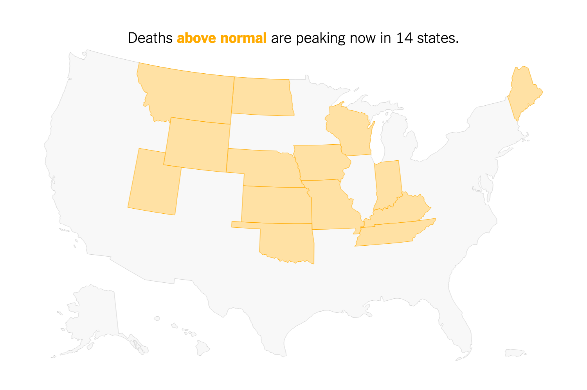

U.S. Passes 12 Million Total Cases and Breaks Daily Record
- The country passed 11 million total coronavirus cases on Sunday; now, its caseload has soared past 12 million.
- Pfizer said that it had submitted an application to the F.D.A. to authorize its coronavirus vaccine for emergency use.
Catch up on the latest.
1 America, 1 Pandemic, 2 Realities
Journeys through two states found Americans leading starkly different lives. New Mexico feels at a standstill.
In South Dakota, life is going right on.

In All 50 States, Deaths Are Now Higher Than Normal
Since the virus struck, 326,000 more people have died than usual across the U.S. That number is much higher than the
official toll, our analysis shows.